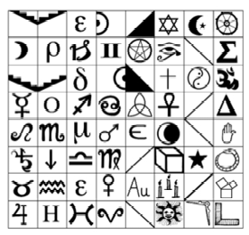

102. BÖLÜM
Robert Langdon, köşeye sıkıştırılan bir hayvanın mucizevi bir güç gösterebileceğini hep duyardı. Ama sandığı alttan var gücüyle ittirdiğinde, hiçbir şey yerinden kıpırdamadı. Etrafındaki sıvı yükselmeye devam ediyordu. Nefes almak için yirmi santimden az bir yer kaldığından, başını kalan hava boşluğuna kaldırmıştı. Şimdi pleksiglas pencereyle yüz yüzeydi. Gözleri ile taş piramidin tabanı arasında ise birkaç santimlik mesafe vardı.
Bunun ne anlama geldiğini bilmiyorum.
Mason Piramidi’nin, sertleştirilmiş balmumu ve taş tozunun altında yüz yılı aşkın bir süredir gizlenen son yazısı artık ortaya çıkmıştı. Akla gelebilecek her türlü geleneğin -simya, astroloji, hanedanlık, semavi dinler, sihir, sayılar, mühür, Yunan, Latin- sembollerinden oluşan mükemmel kare bir tabloydu. Sonuç olarak, bu bir sembol karmaşasıydı; harşeri düzinelerce farklı dil, kültür ve zaman diliminden gelen, bir kâse alfabe çorbasıydı.
Tam bir karmaşa.

Simgebilim Profesörü Robert Langdon, yaptığı en çılgın akademik yorumlarda bile, sembollerden oluşan bu karenin anlam verecek şekilde nasıl deşifre edileceğini bulamazdı. Karmaşanın içinden çıkan Düzen mi? İmkânsız.
Sıvı şimdi ademelmasına gelmişti ve Langdon, kapıldığı dehşet seviyesinin sıvıyla birlikte yükseldiğini hissedebiliyordu. Sandığa vurmaya devam etti. Piramit alay edercesine ona bakıyordu.
Langdon ümitsizlik içinde, zihin enerjisinin her bir zerresini sembolerden oluşan dama tahtasına yoğunlaştırdı. Bunlar ne anlama gelebilirler? Maalesef, karışım birbiriyle öylesine uyumsuzdu ki, nereden başlayacağını bilemiyordu. Tarihin aynı dönemlerine bile ait değiller!
Katherine’in, kutunun dışından gelen boğuk fakat anlaşılır sesini duyabiliyordu. Kadın, Langdon’ı serbest bırakması için ağlayarak yalvarıyordu. Çözüm yolu bulamamasına karşın, yaklaşan ölüm, vücudundaki her bir hücrenin cevabı bulmak için çalışmasına neden olmuş gibiydi. Daha önce hiç deneyimlemediği tuhaf bir şekilde, zihninin açıldığını hissetti. Düşün! Tabloya dikkatle bakıp, ipucu aradı -bir desen, gizli bir kelime, özel bir simge, herhangi bir şey- ama gördüğü, birbiriyle ilgisiz sembollerden oluşan bir tabloydu. Karmaşa.
Langdon her geçen saniye, vücuduna ürkütücü bir uyuşukluğun hâkim olduğunu hissediyordu. Sanki bedeni, zihnini ölüm acısından korumaya hazırlanıyordu. Su artık kulaklarına dolmak üzereydi. Başını olabildiğince yukarı kaldırarak, sandığın kapağına dayadı. Gözünün önünden korkutucu sahneler geçmeye başlamıştı. New England’da bir oğlan çocuğu karanlık bir kuyunun dibinde suyla cebelleşiyordu. Roma’daki bir adam, ters çevrilmiş bir tabutun içinde iskeletin altında kalmıştı.
Katherine’in haykırışları gittikçe artıyordu. Duyabildiği kadarıyla, deli bir adamı ikna etmeye çalışarak, Langdon’ın Almas Shrine Temple’a gitmeden piramidi deşifre edemeyeceği konusunda ısrar ediyordu. “Belli ki bulmacanın eksik parçası o binada! Tüm bilgiye sahip olmadan Robert piramidi nasıl deşifre edebilir?”
Langdon, onun çabalarını takdir ediyordu ama, “Sekiz Franklin Meydanı’nın” Almas Shrine Temple’ı işaret etmediğinden emindi. Zaman çizelgesi baştan aşağı yanlış. Efsaneye göre Mason Piramidi, 1800’lerin ortalarında, Shriners’dan on yıllar önce yapılmıştı. Aslında Langdon o zamanlar buraya Franklin Meydanı dendiğini de sanmıyordu. Kapak taşı, var olmayan bir adresteki, inşa edilmemiş bir binayı gösteriyor olamazdı. “Sekiz Franklin Meydanı” her ne ise... 1850’de var olmak zorundaydı.
Ne yazık ki Langdon hiçbir şey bulamıyordu.
Zaman çizelgesine uyacak herhangi bir şey bulabilmek için hafızasını yokladı. Sekiz Franklin Meydanı? 1850’de var olan bir şey. Hiçbir sonuca varamadı. Su artık kulaklarından içeri sızıyordu. Korkusuyla mücadele ederek, camdaki sembol tablosuna baktı. Aradaki bağlantıyı anlamıyorum! Telaştan çıldırmak üzere olan zihni, bulabildiği uzak yakın tüm benzerlikleri dökmeye başladı.
Sekiz Franklin Meydanı...70 Sekiz Franklin Karesi... kareler... sembol tablosu bir kare... kare ve pusula mason sembolleridir... Masonik sunaklar karedir... karelerin doksan derecelik açıları vardır. Su yükselmeye devam ediyordu ama Langdon bu düşünceyi aklından uzaklaştırdı. Franklin kelimesinde sekiz harf var... 8 yan yatırıldığında sonsuzluk sembolüdür... sekiz numerolojide yok etmenin sayısıdır...
Langdon’ın hiçbir fikri yoktu.
Kutunun dışındaki Katherine hâlâ yalvarıyordu, ama artık sular başının etrafında çalkalandığı için Langdon konuşmasını kesik kesik duyuyordu.
“... bilmeden imkânsız... kapak taşının mesajı açıkça... sır... içinde gizli...”
Sonra sesi kesildi.
Langdon’ın kulaklarından içeri akan su, Katherine’in son sözlerini boğmuştu. Anne karnı gibi bir sessizlik etrafını kaplayınca, gerçekten öleceğini anladı.
Sır... içinde gizli...
Katherine’in son sözleri mezarının sessizliğinde yankılandı.
Sır... içinde gizli.
Langdon tuhaf bir şekilde, bu kelimeleri daha önce defalarca duyduğunu fark etti.
Sır... içinde gizli.
Şimdi bile Antik Gizemler onunla alay eder gibiydi. “Sır... içinde gizli.” İnsanların Tanrı’yı göklerde değil... kendi içinde araması gerektiğini söyleyen gizemlerin temel öğretisiydi. Sır... içinde gizli. Tüm büyük mistik öğretmenlerin verdiği mesaj buydu.
Mesih İsa, Tanrı’nın krallığı içinizdedir, demişti.
Pisagor, kendinizi tanıyın, demişti.
Hermes Trismegistus, sizler tanrı olduğunuzu bilmez misiniz, demişti.
Liste böylece uzayıp gidiyordu.
Tüm çağların mistik öğretileri bu fikri iletmeye çalışmışlardı. Sır... içinde gizli. Buna rağmen insanlar, Tanrı’yı görebilmek için yüzlerini gökyüzüne çevirmişlerdi.
Langdon için bu farkındalık, büyük bir kinaye haline gelmişti. Kendinden önceki bütün körler gibi gözünü gökyüzüne dikmiş olan Robert Langdon, birden ışığı gördü.
Onu adeta yıldırım gibi çarpmıştı.
Sır
Düzen’in içinde gizli
Sekiz Franklin Karesi
Bir anda her şeyi anladı.
Kapak taşındaki mesaj netleşti. Taşıdığı anlam, gece boyunca karşısında durmuştu. Kapak taşındaki metin, tıpkı piramidin kendisi gibi bir bireşim -parçalanmış şifre-, parçalar halinde yazılmış bir mesajdı. Anlamı o kadar basit bir tarzda saklanmıştı ki, Katherine ile bunu fark edemediklerine inanamıyordu.
Ama bundan daha da şaşırtıcı olanı, kapak taşındaki mesajın gerçekten de piramidin tabanındaki sembol tablosunun nasıl çözüleceğini anlatmasıydı. Çok basitti. Tıpkı Peter Solomon’ın söylediği gibi; altın kapak taşı, karmaşanın içinden düzen çıkaracak güçlü bir tılsımdı.
Langdon kapağa vurup bağırmaya başladı. “Biliyorum! Biliyorum!”
Üstünde duran taş piramit uzaklaşırken onun yerinde beliren dövmeli bir yüz küçük pencereden doğruca ona baktı.
Langdon, “Çözdüm!” diye bağırdı. “Çıkar beni!”
Dövmeli adam konuşurken, Langdon’ın suyun altındaki kulakları hiçbir şey duymadı. Ama gözleri, adamın dudaklarının iki kelimeyi söylediğini gördü. “Söyle bana.”
Su neredeyse gözlerine kadar gelen Langdon, “Söyleyeceğim!” dedi. “Çıkar beni! Her şeyi açıklayacağım!” Çok basit.
Adamın dudakları bir kez daha hareket etti. “Ya şimdi söyle... ya da öl.”
Su, son kalan hava boşluğunu da doldururken, Langdon dudaklarını su seviyesinin üstünde tutmak için başını iyice geriye attı. Bunu yaparken gözlerine kaçan sıcak su, görüşünü bulandırdı. Sırtını gererek, dudaklarını pleksiglas cama dayadı.
Ardından, kalan havanın son saniyelerinde Robert Langdon, Mason Piramidi’nin nasıl deşifre edileceği sırrını onunla paylaştı.
Konuşmasını bitirdiğinde, sıvı dudaklarına kadar yükseldi. Langdon, içgüdüleriyle son bir nefes alıp, ağzını sımsıkı kapattı. Hemen ardından sular her yanını tamamıyla kaplamış, tabutun üstüne ulaşarak, pleksiglas pencerede yayılmaya başlamıştı.
Mal’akh, başardı, diye düşündü. Langdon piramidin nasıl çözüleceğini buldu.
Cevap çok basitti. Çok açıktı.
Pencerenin altındaki Robert Langdon’ın su içindeki yüzü, çaresiz ve yalvaran gözlerle ona bakıyordu.
Mal’akh başını iki yana sallayıp, yavaşça şunları söyledi: “Teşekkürler profesör. Ölümden sonraki hayatın tadını çıkar.”
70 İngilizcede meydan anlamına gelen “square” sözcüğü, aynı zamanda kare anlamında da kullanılmaktadır.